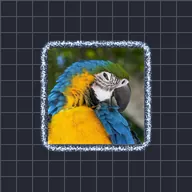

Elektrische randen

Tekent een knetterende, gloeiende omtrek rond de laag. Dikte verbreedt die tot een gloeiende band, elke Seed-waarde geeft een ander patroon, zodat een geanimeerde Seed elk frame knettert, en Evolutie laat het stromen. Optioneel met contourlijnen binnenin.
Instellingen
| Instelling | Type | Bereik | Standaard |
|---|---|---|---|
| Afstand | Getal | 0 px tot 300 px | 30 px |
| Dikte | Getal | 0 tot 1 | 0.8 |
| Detail | Getal | 0 tot 20 | 2 |
| Vervorming | Getal | -1 tot 1 | 0.5 |
| Kleur | Kleur | – | #FFFFFF |
| Gloedkleur | Kleur | – | #3C8CFF |
| Alfa | Getal | 0% tot 100% | 100% |
| Gloed | Getal | 0% tot 100% | 50% |
| Sterkte | Getal | 0 tot 3 | 0.42 |
| Seed | Getal | 0 tot 5 | 0 |
| Evolutie | Getal | -999 tot 999 | 0 |
| Vulling | Getal | 0% tot 100% | 100% |
| Maskersterkte | Getal | 0 tot 1 | 0 |
| Maskerevolutie | Getal | -50 tot 50 | 0 |
| Maskerschaal | Getal | 0.01 tot 50 | 1 |
| Masker-seed | Getal | 0 tot 5 | 0 |
| Maskerkleur | Kleur | – | #FF3CDC |
| Contouren renderen | Aan of uit | – | Uit |
| Aantal contouren | Getal | 0 tot 200 | 20 |
| Contourfase | Getal | -999 tot 999 | 0 |
| Contourhoek | Hoek | -3600° tot 3600° | 0° |
| Stijl | Keuze | Klassiek, Dunne lijnen | Klassiek |